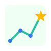
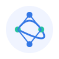

Topological Journey
Visualize Computer Science not as a list of courses, but as a dense graph of interconnected concepts. Navigate the shortest path to high-signal mastery.

Research-Driven Logic
Our Thought Experiments translate the latest CS research into actionable coding challenges. Solve today's industrial problems with academic precision.
Personalized Architecting
Scale your intuition through 1:1 sessions. We don't just review code; we architect the mental models required for senior-level engineering.